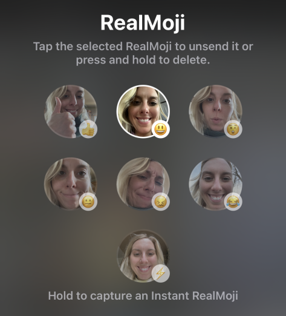

"To be or not to Bereal"
Une exploration de l'authenticité sur les réseaux sociaux
Introduction :

« On va à contre-courant de ce qui existe » déclare en 2021 Alexis Barreyat, le fondateur de BeReal. En effet, l’ambition de l’application française lancée en 2020 est de partager des moments du quotidien instantanés et authentiques. Conçue en opposition à l’application Instagram, sur laquelle les utilisateurs postent des photos permanentes et réfléchies, BeReal prône le naturel. En envoyant une notification chaque jour à tous ses utilisateurs au même moment, elle leur permet de prendre deux photos simultanément : une avec la caméra avant de leur smartphone, une autre avec la caméra arrière. Les utilisateurs disposent de deux minutes pour poster leur BeReal, bien qu’il puisse aussi poster en « late », c’est-à-dire plus tard dans la journée. Les utilisateurs qui se suivent peuvent ensuite réagir aux BeReal de leur cercle d’amis, en leur envoyant un emoji personnalisé avec leur photo. C’est donc ce modèle se présentant à contre-courant des autres réseaux sociaux qui a attiré aujourd'hui plus de 20 millions d’utilisateurs.
Ainsi, l’authenticité est au cœur de BeReal. Notion complexe et polysémique, elle renvoie ici à la sincérité totale d’une chose (Larousse). Il peut s’agir d’un sentiment, d’un acte ou encore d’une parole, qui sont considérés comme véritables et vrais en étant fidèles à leur essence. Cependant, l’authenticité, qui s’oppose à l’artificialité et au faux, est façonnée par les normes définies par la société. L’authenticité est donc différente selon les époques et les groupes sociaux. Subjective et relative, elle est complexe à identifier. Dans le cadre de notre étude, il s’agit donc d’analyser l’expression de l’authenticité sur BeReal, la manière dont les utilisateurs la déploient et les paradoxes que cela peut comporter. En étant fondée sur les critiques d’Instagram, BeReal promeut l’authenticité en donnant accès à la vie quotidienne des utilisateurs de manière transparente et spontanée. Cela est possible compte tenu du fonctionnement de l’application mais avant tout compte tenu de la volonté des utilisateurs de davantage de spontanéité et de naturel.
C’est donc autour de la notion d’authenticité que se base toute notre exploration de l’application. Afin de rendre au mieux compte de ces semaines de réflexion, nous avons choisi de retracer notre cheminement intellectuel à la lettre, en suivant ainsi nos 5 hypothèses de départ. La démarche qui sera la nôtre consistera alors à la présentation de ces hypothèses thématiques, ainsi qu’à leur confrontation pour tester leur validité. Pour cela, nous avons mis en place différents outils, le premier étant un sondage contenant 25 questions, qui cherchent à recenser les pratiques et les ressentis des utilisateurs. Nous avons fait circuler ce dernier dans nos cercles d’amis où dans nos groupes de promotion pour avoir un échantillon le plus représentatif possible de la population utilisatrice de Bereal, essentiellement jeunes, ou jeunes adultes (16-25 ans). Nous avons ensuite mené chacun des entretiens, pour étayer d’une dimension qualitative nos résultats. Constitué d’une dizaine de questions cette fois ci axées principalement sur leur vécu et leur appréciation de l’application, ces entretiens ont eu pour but de réellement confronter la notion d'authenticité sur Bereal.
Enfin, nous nous sommes aussi appuyés sur un cadre théorique bien précis pour expliquer plus rigoureusement nos conclusions. Ce cadre théorique est donc centré sur l'authenticité, ainsi que sur d’autres concepts auxquels nous avons pu faire référence tels que l’autonomie, l’identité, la liberté, la persuasion, ou encore la psychologie des foules théorisée par Gustave Le Bon. Une notion essentielle sera celle du libre arbitre, que nous entendrons au sens de Descartes comme “un pouvoir de la volonté''. Ce pouvoir, qui est la capacité d'affirmer ou de nier quelque chose et de poursuivre ou de fuir quelque chose, est un pouvoir infini. En ce sens, il est possible en théorie de faire une chose contraire à ce que nous savons que nous devrions faire”. Nous avons ensuite centré notre domaine théorique autour de la sociologie, notamment celle d'Erwing Goffman relative aux travaux sur la notion de face (Les rites d’interaction, 1967). Pour cela nous nous sommes appuyés sur l’oeuvre de Céline Bonnico, Goffman et l’ordre de l’interaction : un exemple de sociologie compréhensive, ce qui nous permet par exemple d’affirmer que l’authenticité est relative aux normes, elles mêmes associées à “l’identité ou au rôle social” et “au groupe, à ses pairs, et ses relations”. Une autre source que nous mobilisons est celle de Liens forts liens faibles, du professeur Dominique Cardon, et qui nous sera utile dans l'établissement de notre typologie des utilisateurs. Enfin, une dernière référence qui nous a permis d’explorer plus largement le concept d’authenticité, est l'article The Importance of Authenticity for Self and Society, écrit par Rebecca J. Erickson. Selon sa définition, une chose peut être qualifiée “d'authentique" si elle est considérée comme fidèle à l'essence de quelque chose, à une vérité révélée ou à un sentiment profond. L'authenticité, si elle s’apparente à un concept relativement simple, fait émerger certaines contradictions et problèmes qui vont nous permettre d’explorer la dimension authentique de Bereal sous plusieurs notions.
Ainsi, ces données nous permettent de tenter de répondre à la question qui dirige notre exploration, dans quelle mesure l’authenticité que promeut Bereal est-elle une réussite ? En effet, à l’heure où de nombreux utilisateurs de réseaux revendiquent un besoin de transparence et dénoncent le côté “fake” de géant comme Instagram, nous avons cherché à évaluer la réponse de Bereal à ce besoin défaillant. Notre réponse et donc notre exploration est divisée en trois grands axes, le premier confrontant nos deux premières hypothèses : Bereal est une application qui promeut l’authenticité, au sein de laquelle il est possible d’identifier une certaine typologie d’utilisateurs. Ensuite, notre deuxième partie entend aussi tester la validité de deux autres hypothèses, Bereal n’est pas aussi réel qu’il paraît, et serait même voué à disparaître. Enfin, pour ce dernier bloc, nous chercherons à évaluer notre dernière hypothèse, selon laquelle l’application serait avangardiste et déclencheuse d’un nouveau mouvement global sur les réseaux sociaux. Nous terminerons cette exploration avec un compte rendu général et par l’établissement de nos conclusions quant au triomphe de l’authenticité sur Bereal.
A noter : les références faites au cours de l'exploration à des documents, images, articles sont à retrouver en bas de page, dans l'onglet Bibliographie et sitographie où Autres références .
Hypothèse 1 : Bereal est une application qui promeut l'authenticité et le naturel
Pour cette première partie de l’exploration, nous partons de notre première hypothèse : “Bereal est un réseau social qui promeut l’authenticité”. Tout d’abord, si l’on s’en tient à notre définition de l’authenticité, quelque chose qui est conforme à la vérité, Bereal y répond totalement. C’est un réseau social naturel et sans filtre, contrairement à de nombreuses autres plateformes aujourd'hui, incitant leurs utilisateurs à se cacher derrière des filtres bronzant ou dissimulant certaines imperfections. De plus, dans le concept même de l’application, ce dernier tend à être au plus près de la vérité : l’action de poster est instantanée et spontanée. N'étant soumise à aucune incitation des utilisateurs (sauf dans le cas des “late” développés à la suite), la notification intervient indépendamment, sans préavis ni programmation, et ne laisse que 2 minutes à l’utilisateur pour saisir son cliché. Ainsi, tout notre cercle d'amis reçoit à ce même moment la même notification, ce qui permet à tous de s’immerger quelques instants dans le quotidien des autres et de se sentir proche, d’avoir le sentiment de partager l’instant. D’ailleurs, les utilisateurs y semblent très attachés, puisque 52% d’entre eux "préfèrent poster au moment de la notification”.
Ensuite, Bereal entend rester fidèle à la réalité du cercle social de l’utilisateur. A l’inverse des autres réseaux, basés sur la popularité et la recherche d’un nombre d'abonnés toujours plus spectaculaire, Bereal insiste sur la représentation réelle de notre sociabilité, avec son slogan : “Be real, tes amis pour de vrai”. En effet, comme le confirme notre sondage, 89,4% des utilisateurs de l’application l’ont téléchargée car “des amis en ont parlé”, et plus des deux tiers d’entre eux, 75,6% ne partagent leur quotidien qu’avec un cercle proche, “entre 1 et 20 personnes”. De même, ajouter quelqu'un à notre feed fait l'objet d’une demande, que l’utilisateur doit accepter ou refuser, agissant alors comme un vrai filtre.
Une autre fonctionnalité de l’application qui encourage son public à être authentique est celle qui indique le nombre de prises. En effet, pour chaque Bereal posté, il est possible de voir à combien de fois l’utilisateur s’y est repris pour poster ce cliché. Fortement utilisée par les utilisateurs, Charles (un de nos sondés pour les entretiens), me dit que ca lui permet de “voir qui est fake”, ce qui selon lui “ruine tout le concept de l’application”. Au-delà de l’avis de nos amis, cela encourage à poster une photo sur l'instant, sans se prendre la tête. Ensuite, ce sont par les réactions que Bereal se veut encore une fois le plus naturel possible, en effet, il est possible de réagir instantanément à tous les Bereals de notre feed. Pour cela, l’application “remplace” sur un certain émoji, le visage du smiley par le nôtre sur un moment T.

Au-delà de ces fonctionnalités, le concept authentique de Bereal est visible par l’avis qu’en ont les utilisateurs. L’application n’est pas contraignante et ne vient pas déranger intrusivement le quotidien de plus de 80% des utilisateurs. De même, une de nos questions demandait aux répondants de sélectionner les 2 mots qui qualifient selon eux le mieux Bereal : Pour 68,4%, c’est l’ affirmation “sans prise de tête", pour 80% c’est “partage”, et pour 30% “c’est authentique”. Cette question a aussi été posée en entretien, et l’approbation pour ces mêmes adjectifs est également observable. On comprend bien que Bereal met ici en avant une vision naturelle d’un quotidien réel de ses utilisateurs, en les incitant (sans contrainte) à partager avec leurs amis des moments simples, permettant ainsi de garder un contact vrai et authentique.
Hypothèse 2 : Il existe une typologie d'utilisateurs de l'application Bereal
Pour autant, tous les utilisateurs de BeReal ne suivent pas de la même manière cette injonction à la transparence. En effet, si certains tentent de suivre le principe de l’application de poster dans le 2 minutes suivant la notification, comme Charles mentionné plus haut, d’autres ne prennent pas en compte la notification et postent lorsque bon leur semble. Ainsi, Laure, une autre enquêté, explique qu’elle poste quand elle y pense et qu’il lui arrive d’attendre de faire quelque chose jugé plus intéressant pour poster son BeReal : « Ça m’arrive de me dire que je vais faire mon BeReal plus tard parce que je vais faire un truc plus intéressant après ».
On remarque donc des utilisations très différenciées de BeReal selon les individus. A la lumière de nos entretiens et du sondage nous avons constaté qu’il y a plusieurs types d’utilisation de l’application qui se différencient par l’usage mais aussi par l’image de BeReal auprès de ces utilisateurs. Dès lors, on peut dresser une typologie des utilisateurs de BeReal. (A noter que cette classification se base uniquement sur le fait ou non que les utilisateurs poste un BeReal quotidiennement et à l’heure, ainsi que leurs raisons de suivre cette injonction. Intégrer d’autres éléments comme la mise en scène des photos est plus compliqué à faire. En effet, cette mise en scène peut être inconsciente. De plus, les enquêtés peuvent ne pas avouer qu’ils se mettent en scène. Par conséquent, nous avons préféré se baser uniquement sur le facteur de la temporalité qui nous semble plus objectif et plus clair afin de faire cette typologie.) Avant d’aborder cette typologie il faut revenir sur ces limites. En effet, celle-ci a été dressée grâce à des entretiens et un sondage de 141 personnes, mais rien ne nous indique que cet échantillon est représentatif des utilisateurs de BeReal en général. Ainsi, sans pour autant remettre en cause l’ensemble de la classification, cela nous pousse à prendre les ordres de grandeurs avec recul.
Premièrement, nous avons l'utilisateur qui se veut le plus authentique dans le sens où il cherche à respecter au maximum les injonctions de l’application, à savoir poster une photo quotidiennement à l’heure indiqué. On retrouve dans cette catégorie des individus qui mettent en avant le respect du principe de l’authenticité comme Charles un enquêté que nous avons déjà évoqué. Ce dernier, explique que : « Si les gens ne le respectent pas [le fait de poster un BeReal dans les 2 minutes suivant la notification], cela deviendrait selon lui comme un autre réseau », il associe cela à une attitude « Fake » qui selon lui « ruine le concept de l’application ». Dans le sondage, 12% des individus essayent au maximum de poster dans les deux minutes suivant l’application. Ce pourcentage peut paraître faible mais en réalité 40% des utilisateurs trouve cela idéal de poster à l’heure sans pour autant estimer le retard grave. Ainsi cette catégorie de personnes cherchant à se conformer à l’injonction de l’authenticité prônée par l’application représente une grande partie des sondés.
Ensuite, il existe aussi les individus retardataires. Cette catégorie est très intéressante car les sonder et enquêter se justifie de différentes manières quant à la raison de leur retard. On retrouve parmi ces justifications le fait de ne pas avoir le temps de poster un BeReal ou de ne pas être toujours sur son téléphone. Un enquêté détaille ses raisons : « Personnellement, je ne suis pas toujours sur mon téléphone et suis souvent en mode ne pas déranger Ducoup je loupe tout le temps la notif… Enfin je la vois quand je vais sur mon tel pour autre chose que BeReal. Ducoup je poste toujours en retard mais ils ne sont jamais long… Une heure grand max » [La citation a été modifiée pour des soucis de clarté]. Cette même personne explique ne pas interrompre ses activités pour faire un BeReal : « Si je bosse ou même si je fais les courses et que je reçois la notification je ne poste pas directement, je finis ce que je fais et ensuite je poste ». A noter que cette dernière attitude n’est pas majoritaire chez nos sondés car plus d’un quart d’entre eux ont interrompu leur travail pour poster un BeReal. Enfin, une partie des retardataires le font dans le but de faire un poste intéressant, c’est le cas de Laure, une enquêtée que nous avons précédemment évoqué. Au total 45% des sondés déclarent poster un BeReal lorsqu’ils ont le temps et 15% déclarent le faire seulement quand ils font quelque chose d’intéressant. Ainsi, cette catégorie n’évoque à aucun moment le principe d’authenticité promu par l’application. L’usage et le regard qu’ils portent sur BeReal est donc aux antipodes de la première catégorie que nous avons évoquée. Pour autant sont-ils moins authentiques comme on pourrait à priori le penser que la première catégorie ? En effet, ce dernier n’évoque à aucun moment l’authenticité dans leur rapport à BeReal. Cependant, ne pas suivre les injonctions d’un réseau social et avoir une utilisation de BeReal plus personnel et moins intrusif par rapport à ceux qui suivent à la lettre les principes du réseau social correspond peut-être à une utilisation plus authentique en soi. Cette authenticité provient justement du fait de ne pas se soumettre aux pratiques promues par l’application.
Enfin, une dernière catégorie est celle des intermittents. Cette dernière et celle des individus qui ont téléchargé l’application mais qui sont peu impliqués, c’est-à-dire qu’il ne poste pas souvent et pas non plus à l’heure. Ces individus ne prennent pas non plus à cœur le principe d’authenticité de l’application. Alexandre un enquêté qui correspond à cette catégorie détaille son utilisation : « Je poste une à deux fois par semaine mais honnêtement je m’en fiche un peu […] Je vois peu d’intérêt à poster et je pense supprimer l’application ». Il précise dans l’entretien : « Des potes m’ont fait télécharger l’application, m’ont dit que c’était super mais je ne suis pas trop hype par le principe… Je pense que c’est pour ça que je ne suis pas très actif ». 13% des sondés postent moins d’une fois par semaine. En outre, Dominique Cardon explique dans Réseaux sociaux de l’internet que la réussite des réseaux sociaux se base notamment sur le fait que les personnes y exposent différents traits de leur identité à l'aide de 2 processus. Le premier est la subjectivation qui correspond au fait pour les utilisateurs : « d’extérioriser leur identité dans des signes qui témoignent moins d’un statut incorporé et acquis que d’une capacité à faire ». Le second est la simulation qui conduit les individus à « endosser une diversité de rôles exprimant des facettes multiples, et plus ou moins réalistes, de leur personnalité ». Or on remarque qu’il est difficile de respecter ces deux processus sur BeReal justement car il est rendu compliqué toute mise en scène. Ainsi, BeReal met à mal les processus qui ont fait jusqu’ici la force des réseaux sociaux ce qui a aussi contribué les individus à se détourner de l’application.
A noter, que ces catégories sont fluctuantes et que les personnes peuvent passer de l’une à l’autre. Par ailleurs, nous avons remarqué durant nos entretiens que l’usage que les individus font de BeReal peut être amené à faire évoluer l’usage d’autres individus. Une remarque de l’un des sondés est particulièrement révélatrice de ce phénomène : « Je trouve que l’authenticité, but de l’application, a peu à peu disparu au fur et à mesure que bereal est devenu populaire et que j’ai eu plus de contacts dessus : au début en novembre 2020 je postais vraiment ce que je faisais dès que je voyais la notif, plus maintenant ».
Par ailleurs, il est intéressant d’analyser les utilisateurs de BeReal selon les concepts qu’a développés Dominique Cardon, sociologue déjà évoqué ci-dessus. Tout d’abord, le sociologue différencie les pratiques sur les réseaux sociaux dites friendship-driven et interest-oriented. La première catégorie correspond aux conversations et aux liens avec les proches tandis que la deuxième est le partage de contenus avec des personnes ayant les mêmes centres d’intérêt. Il faut préciser que BeReal est avant tout un réseau social friendship-driven, en effet il n’est pas possible d’effectuer des recherches autour d’un centre d’intérêt mais uniquement pour rechercher des pseudonymes. De plus, le fait que les posts soient éphémères et qu’on ne puisse pas vraiment les préparer ne permet pas de partager aisément un centre d’intérêt comme sur Instagram. Globalement, BeReal promeut les liens forts notamment par la manière dont fonctionne l’application. Les utilisateurs de BeReal ont un cercle d'amis beaucoup plus restreint sur BeReal que sur d’autres réseaux, comme Instagram notamment, et beaucoup affirment que l’application leur permet de maintenir le contact avec les proches. Dès lors le phénomène de clair-obscur (qui s’apparente à zone de familiarité contrôlée dans laquelle les utilisateurs rendent publics des éléments parfois très personnels de leur vie quotidienne tout en pensant ne s’adresser qu’à un réseau de proche) existe sur BeReal il est néanmoins moins ouvert vers que d’autres réseaux sociaux sur l’extérieur car les individus sélectionnent plus les individus à qui il partage leur post sur BeReal.
Hypothèse 3 : Bereal n'est pas une application qui met en avant l'authenticité
De prime abord, la majorité des utilisateurs considèrent qu’ils ne font pas usage de BeReal par obligation : 79,8% d’entre eux déclarent ne s’être jamais forcés à poster un BeReal. Ils ont la sensation d’utiliser l’application quand bon leur semble. Cependant lorsque l’on creuse leurs réponses, on réalise qu’il existe des contradictions internes. 55,4% des répondants, soit plus de la moitié, ont affirmé avoir déjà mis en scène un BeReal pour qu’il soit plus intéressant. En effet, la notion d’authenticité évolue à travers les époques. Dans les sociétés individualisées du XXIe siècle, les individus qui existent à travers leurs particularités cherchent à faire valoir leur singularité. Pour cela, obtenir l’approbation d’autrui vis-à-vis de notre subjectivité est essentiel. A l’ère du numérique où chacun s’expose, ce besoin d’être reconnu comme un être singulier prend donc des formes différentes.
Dans cette perspective, des utilisateurs mettent en scène ce qu’ils sont en train de réaliser au moment du BeReal. Par exemple, Zoé, 21 ans, déclare : « Non, je ne fais jamais semblant quand je prends un BeReal. Après, je peux choisir de ne pas en faire un car je me dis que ça sert à rien. Ce n’est pas intéressant quoi, autant attendre et montrer un truc mieux après. ». Ainsi, l’utilisateur est prêt à être authentique, mais seulement dans certaines situations. Certains utilisateurs vont omettre de publier un BeReal parce qu’ils considèrent qu’il n’a pas de pertinence, sans réaliser qu’ils brisent les codes de l’application. A ce propos, 44,6% des utilisateurs déclarent avoir « déjà fait semblant d'aller bien sur un BeReal ». Par exemple, plutôt que de montrer leur visage en pleurs ou tout simplement neutre, les utilisateurs vont parfois inconsciemment esquisser un sourire au moment de prendre le BeReal, une habitude qui suit les conventions sociales. Zoé affirme à ce sujet : « Sourire c’est pas vraiment tricher, c’est comme quand on dit à quelqu’un que ça va quand on lui dit bonjour. On ne va pas dire non, c’est beaucoup trop long à expliquer ». En effet, dans certaines situations, les utilisateurs ne souhaitent pas montrer ce qui pourrait engendrer de multiples questions supplémentaires. Bien que les utilisateurs souhaitent conserver des liens avec leur entourage, ils ne veulent pas constamment avoir des échanges plus profonds qui mèneraient à expliquer la complexité de leur état d’esprit. De plus, ils ne souhaitent pas toujours montrer ce qui pourrait être considéré comme une faiblesse telle que la tristesse, l’ennui ou la colère. Cela peut être le cas, mais de manière limitée.
Cependant, on peut se demander si cette dynamique ne reflète pas une facette différente de l’authenticité. En effet, on peut considérer qu’un utilisateur qui refuse de montrer une partie de son quotidien contredit la logique prônée de l’authenticité. Pour autant, un tel comportement reste authentique dans une certaine mesure. N’est-il pas naturel de vouloir montrer seulement ce dont on a envie ? L’humain étant en être social, il semble logique qu’il souhaite renvoyer la meilleure image de lui-même et répondre aux attentes de son groupe de Paris: il veut « garder la face » et éviter une situation de déviance. Forcer la logique première d’authenticité, même sur BeReal, serait donc porter atteinte à la réalité sociale à laquelle sont confrontés les utilisateurs.
Néanmoins, le principe d’authenticité peut se confronter à la logique de sensationnalisme que l’on retrouve dans les médias et dans les autres réseaux sociaux. Le naturel poussé à son paroxysme répond à une logique de compétition. Chez certains utilisateurs, poster son BeReal à l’heure devient plus urgent que de contacter les secours, de mener à bien une opération, d’éteindre une cuisine qui s’enflamme ou encore échapper à un accident de voiture . Ce phénomène est notamment remarqué par 36% des utilisateurs qui considèrent que les BeReal « vont parfois trop loin ». Ainsi, des utilisateurs partagent des photos en mettant en avant le caractère dramatique de la situation. Ces Bereal sont ensuite partagés sur d’autres réseaux sociaux et notamment sur Tik Tok qui accroît leur audience en provoquant un effet de mode. Ils contredisent dès lors le principe d’authenticité en cherchant à produire le BeReal le plus spectaculaire.
Hypothèse 4 : Bereal serait voué à disparaître
Or, l’émergence du sensationnalisme et du manque d’authenticité sur la plateforme en vient à la fragiliser. En effet, certains utilisateurs songent à quitter la plateforme et ceux pour deux principales raisons, à la fois contradictoires et intriqués. À noter que ces deux raisons restent des hypothèses que nous faisons à partir du ressenti des sondés et des enquêtés mais ne correspondent à un effet de masse d’or et déjà visible sur la plateforme qui est encore en pleine expansion.
Tout d’abord, certains utilisateurs critiquent la disparition de l’authenticité sur BeReal. Des applications comme BeReal sont authentiques tant qu'elles restent dans une niche. Une fois qu'elles gagnent en notoriété, elles tombent en disgrâce, souvent parce qu'elles sont rachetées par des entités établies (comme Instagram), ou parce qu'elles doivent finalement répondre aux pressions de la croissance du marché. Dans le cas de BeReal aucun rachat en vue, pour autant l'afflux important de nouveaux utilisateurs transforme l’application en effet de mode. Ces nouveaux utilisateurs qui suivent l’effet de mode prennent moins à cœur l’injonction à l’authenticité de l’application ce qui agace les utilisateurs plus anciens. On se rappelle ce commentaire lors du sondage déjà mentionné plus haut : « Je trouve que l’authenticité, but de l’application, a peu à peu disparu au fur et à mesure que bereal est devenu populaire et que j’ai eu plus de contacts dessus : au début en novembre 2020, je postais vraiment ce que je faisais dès que je voyais la notif plus maintenant ». Ainsi, les utilisateurs anciens qui avaient été attirés par le principe d’authenticité et l’originalité de l’application se retrouvent aujourd’hui à être très critiques vis-à-vis du succès de l’application. Le risque, ici, est intrinsèque à la popularité ; la spontanéité pourrait manquer avec le temps, une fois que l'application est établie comme une grande application. Elle deviendrait grand publique et donc moins conviviale. Il est intéressant de noter qu'ici, le "mainstream" est traité comme un état en opposition naturelle avec l'authenticité.
La seconde raison, en partie contradictoire avec la première, est que l’authenticité lasse les utilisateurs, notamment les nouveaux qui suivent l’effet de mode. Ces utilisateurs sont, comme expliqué précédemment, moins attirés par le principe de l’authenticité. Par ailleurs, ce sont sûrement les plus susceptibles de poster des photos sensationnelles ou moins authentiques. De ce fait, ces utilisateurs s’inscrivent moins du long terme vis-à-vis de BeReal. Ils risquent donc potentiellement de quitter l’application une fois l’effet de mode passer, semblable à ce qui c’était passé avec Vine en 2015. À noter que tout comme le cas de Vine, l’imitation du concept de BeReal par des réseaux concurrents va fragiliser l’application et tendrait à accroître ce phénomène de fragilisation de l’application que nous conjecturons.
Hypothèse 5 : Bereal est une application avant-guardiste qui impulse de nouvelles tendances
Le mouvement d'authenticité n'est pas propre uniquement à BeReal. Des challenges sur TikTok et Instagram où les utilisateurs montrent leurs corps sans filtres ont donné lieu à un vaste mouvement de positivité corporelle qui favorise une plus grande inclusivité. Les utilisateurs en quête d'authenticité se sont appropriés les règles et en ont fait leur propre usage à travers différents modes d'utilisation, comme on peut le trouver dans les challenges de #normalizenormalbodies ou #bodyneutrality. Ainsi, cela montre un désir des plus jeunes de voir plus des corps auxquels ils peuvent s’identifier, et des plateformes plus "relatable" pour les exposer.
Des applications comme BeReal sont une des premières tentatives pour faciliter ce besoin d’avoir des applications plus saines, humaines et authentiques; en remettant en cause les réseaux traditionnels. Il s'agit d'une nouvelle génération d’utilisateurs qui défendent l'idée que les réseaux utilisés pour le plaisir devraient s’aligner avec les valeurs propres des consommateurs, au lieu de faire l’inverse est se laisser influencer par les valeurs des plateformes. Cette conviction est si forte qu'elle peut entraîner des changements significatifs dans le mode d’utilisation des réseaux sociaux et des nouvelles tendances. De cette manière, on pourrait se demander si le concept angulaire de notre enquête, l’authenticité, deviendra la valeur structurante de la vie en ligne et la communication sur les réseaux sociaux.
BeReal a capitalisé sur la notion d’authenticité et se vend comme l’application authentique par excellence. De plus, on peut se demander si elle a été le facteur déclencheur d’un mouvement d’authenticité sur d’autres plateformes. L’authenticité de BeReal est-elle devenue la nouvelle mode?
S'appuyant sur la spontanéité et l'authenticité de BeReal, des réseaux comme TikTok Now (nouvelle fonctionnalité de TikTok), Locket, Dispo ou Minutiae ont repris la même logique de BeReal en partageant “ vos moments les plus authentiques avec les personnes les plus importantes pour vous” comme l'indique un communiqué de TikTok Now . Il semble que BeReal a laissé la porte ouverte à d'autres applications et tendances pour continuer à développer une connexion en ligne plus authentique. On se trouve, ainsi, face à une révolution de la façon de communiquer sur les réseaux sociaux. L’expression dans une forme plus pure, une plus grande honnêteté et une plus grande volonté de se connecter aux autres, s’opposent aux formes de communication traditionnels et posent les bases pour les réseaux futurs.
Théo, 19 ans, explique: “ J'aime beaucoup Bereal parce que je vois ce que mes amis font et je peux vraiment interagir avec eux. Il y a moins de distance entre nous qu'à travers les stories d'instagram”. Ces applications de réseaux sociaux plus authentiques se distinguent par des caractéristiques particulières : un cercle sélectif d'amis et de followers, l'instantanéité, l'impossibilité de mettre en scène et de modifier les photos, et un sentiment de dépendance curatif. Un rééquilibrage est en train de s’opérer dans nos sociétés, il s’agit d’un rééquilibrage de notre relation avec la technologie. La communication en masse se voit remplacée par une communication plus restreinte et vraie, ou encore, la recherche de la popularité est remplacée par la recherche de la normalité et de l'authenticité. L'idée d'identité semble avoir évolué vers une logique d'introspection dans laquelle la santé mentale, les préférences et les passions individuelles sont privilégiées. Se pourrait-il également que les individus de notre société soient davantage préoccupés par leur propre bien-être que par le désir de projeter une image extérieure positive, comme l'explique Goffman? Seront les applications futures basées davantage sur la notion d’authenticité? De cette manière, on observe qu'une société basée sur la connexion authentique est en train de surgir avec l’essor de BeReal, une application inspiratrice et déclencheuse des mouvements d’authenticité.
Conclusions et compte rendu de notre exploration :
Après avoir analysé le concept d'authenticité dans l'application BeReal sous un angle multiple, il est utile de mettre en perspective toutes les hypothèses mentionnées ci-dessus afin de parvenir à une conclusion.
Tout d'abord, l'innovation de BeReal a été analysée dans un premier bloc dans lequel il a été expliqué comment l'authenticité est appliquée dans cet instrument de communication. L'objectif de base de BeReal est de promouvoir l'authenticité, ainsi, ce principe est atteint à travers, par exemple, la publication impromptue d'une photo à un moment inattendu de la journée. Cependant, avec l'usage, différents types d'utilisateurs de BeReal et de cette authenticité se sont progressivement créés. La diversité des modes d’utilisation, certains jouant plus le jeu de l’authenticité que d’autres, produits des contradictions et remise en cause de l’objectif même de BeReal d’être un réseau réel. De cette manière, BeReal n’est pas aussi authentique qu’il ne le laisse paraître. En raison du sensationnalisme et pratiques réelles des fonctionnalités, la promesse d'authenticité de l’application n'est devenue qu'un outil de marketing.
Ainsi, pour revenir à la question qui dirige notre exploration: dans quelle mesure l’authenticité que promeut Bereal est-elle une réussite ? BeReal s'est généralisé et est devenu un pilier du paysage des réseaux sociaux de la génération Z. Cependant, comme l'a fait valoir l'historien de la communication et réseaux sociaux, Jefferson Pooley, plus nous recherchons avec ardeur un sentiment d'authenticité, plus les spécialistes du marketing tentent de nous séduire avec des produits et services susceptibles de répondre à ce besoin. Mais, ne s'agit-il pas d'une entreprise sisyphéenne? L’hypothèse 4 examine, ainsi, la disparition potentielle de BeReal car le besoin reste défaillant. La promesse d’authenticité n’est pas accomplie et les utilisateurs déçus par l’absence de l’originalité première de l’authenticité se retrouvent à être critiques vis-à-vis l’application. Par conséquent, de la même manière que le mythe de Sisyphe, le rocher ou le besoin d’un réseau authentique redescend à chaque fois en bas de la colline parce que l’objectif d’authenticité n’est pas respecté. Les spécialistes du marketing continuent à le proposer, et le cycle continue.
Ce qui est clair, cependant, c'est que BeReal a montré que la société n'est plus fondée sur une notion de popularité sur les réseaux sociaux, mais que l'authenticité et le souci de soi deviennent plus importants dans les modes de communication sur Internet. La spécificité de BeReal est qu'il fait partie d'un tout nouveau courant de réseaux sociaux que l'on appelle "anti-traditionnels". Même si son objectif est déformé sur la plateforme, comme nous avons pu le constater et le conclure, l’ouverture de ce projet démontre le fait que BeReal a été le pionnier d'une nouvelle forme de communication authentique est un fait.
Blibliographie et sitographie :
BONICCO, Céline. « Goffman et l’ordre de l’interaction : un exemple de sociologie compréhensive ». Philonsorbonne, n°1, novembre 2007, p. 31‑48, journals.openedition.org, https://doi.org/10.4000/philonsorbonne.102
CARDON, Dominique. « Réseaux sociaux de l’Internet ». Communications , vol. 88, no 1, 2011, p. 141‑48, https://www.cairn.info/revue-communications-2011-1-page-141.htm
ERICKSON, Rebecca J. « The Importance of Authenticity for Self and Society ». Symbolic Interaction , vol. 18, n° 2, mai 1995, p. 121‑44. , https://doi.org/10.1525/si.1995.18.2.121
LIPOVETSKY, Gilles. Le sacre de l’authenticité . Gallimard, 2021, https://www.cairn.info/le-sacre-de-l-authenticite--9782072958700.htm.
Le site de Bereal
Autres références :
Accéder à notre sondage
Accéder à nos entretiens
Nous contacter
Production originale réalisée par Délia Dinca, Lylou Remoue, Raphaëlle Bourbonneux et Jules Martinez, élèves de 2ème année du cours "Culture et Ejneux du numérique", durant l'année universitaire 2022-2023 à Sciences Po Paris.